Route 66 Travel Guide
Experience the Mother Road by exploring Route 66 through the interactive map. Stretching from Chicago to Santa Monica, this legendary highway passes through classic diners, neon-lit landmarks, historic towns, roadside attractions, and some of America's most iconic landscapes. Whether you're seeking nostalgia, photography, local culture, or the ultimate cross-country adventure, Route 66 offers an unforgettable journey through the heart of America's road trip heritage. Start planning your drive and discover why the Mother Road continues to inspire travelers from around the world.


-400.jpg)


Places to See on Route 66

PortableNYCTours, CC BY-SA 4.0, via Wikimedia Commons; Image Size Adjusted
.jpg){kind=link}
Begin Route 66 Sign
Chicago
Cathedral in the Morningside Heights neighborhood of Manhattan is the world's sixth-largest church by area

Anthony Quintano from Hillsborough, NJ, United States, CC BY 2.0, via Wikimedia Commons; Image Size Adjusted
.jpg){kind=link}
Lou Mitchell's Restaurant
Chicago
Most visited urban park in the United States, with an estimated 42 million visitors annually as of 2016, and is the most filmed location in the world
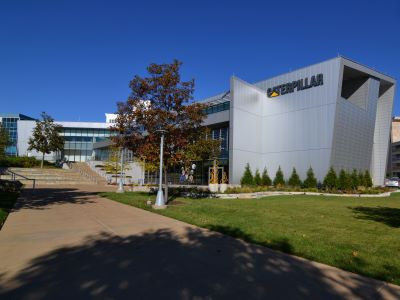
bryan..., CC BY-SA 2.0, via Wikimedia Commons; Image Size Adjusted
.jpg){kind=link}
Route 66 Association of Illinois
Springfield
Museum complex comprises 26 interconnected buildings housing 45 permanent exhibition halls, in addition to a planetarium and a library
Rhododendrites, CC BY-SA 4.0, via Wikimedia Commons; Image Size Adjusted
.jpg){kind=link}
Gemini Giant
Wilmington
16.3-acre complex of buildings houses nationally and internationally renowned performing arts organizations including the New York Philharmonic, the Metropolitan Opera, and the New York City Ballet
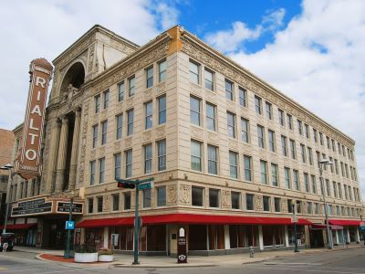
TomasEE, CC BY 3.0, via Wikimedia Commons; Image Size Adjusted
.jpg){kind=link}
Polk-A-Dot Drive-In
Braidwood
Largest art museum in the United States. Its permanent collection contains over 2 million works, divided among 17 curatorial departments
Jdforrester, CC BY 4.0, via Wikimedia Commons; Image Size Adjusted

Ambler's Texaco Gas Station
Dwight
Aerial tramway in New York City that spans the East River and connects Roosevelt Island to the Upper East Side of Manhattan
Jean-Christophe BENOIST, CC BY 3.0, via Wikimedia Commons; Image Size Adjusted

Standard Oil of Illinois Gas Station
Odell
Art museum that is home of a continuously expanding collection of Impressionist, Post-Impressionist, early Modern, and contemporary art

Ajay Suresh from New York, NY, USA, CC BY 2.0, via Wikimedia Commons; Image Size Adjusted
.jpg){kind=link}
Funks Grove Pure Maple Sirup
Shirley
Theatrical performances which are presented in the 41 professional theatres, located in the Theater District and the Lincoln Center along Broadway

ajay_suresh, CC BY 2.0, via Wikimedia Commons; Image Size Adjusted
.jpg){kind=link}
Cozy Dog Drive-In
Springfield
9.6-acre (39,000 m2) public park in Midtown Manhattan where the eastern half is occupied by the Main Branch of the New York Public Library and the western half contains a lawn, and shaded walkways
Misterweiss at English Wikipedia, Public domain, via Wikimedia Commons; Image Size Adjusted

Maid Rite
Springfield
Art Deco skyscraper in the Turtle Bay neighborhood on the East Side of Manhattan is the tallest brick building in the world with a steel framework
Hypnotoad78, CC BY-SA 4.0, via Wikimedia Commons; Image Size Adjusted

Ariston Café
Litchfield
Outdoor terrace jutting 80 feet outward south, providing panoramic views of Manhattan and the Hudson River
Dixie Family Restaurant
McLean
Commuter rail terminal in Midtown Manhattan known for its distinctive architecture and interior design that have earned it several landmark designations

ajay_suresh, CC BY 2.0, via Wikimedia Commons; Image Size Adjusted
_(51395759113).jpg){kind=link}
Chain of Rocks Bridge
St. Louis
Art museum located in Midtown Manhattan is often identified as one of the largest and most influential museums of modern art in the world

Ingfbruno, CC BY-SA 3.0, via Wikimedia Commons; Image Size Adjusted
.jpg){kind=link}
Ted Drewes Frozen Custard
St. Louis
Flagship building in the New York Public Library system and a landmark in Midtown Manhattan
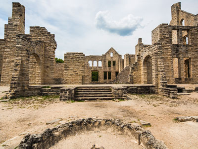
PumpkinSky, CC BY-SA 3.0, via Wikimedia Commons; Image Size Adjusted

Route 66 State Park
Eureka
Art Deco styled entertainment venue within Rockefeller Center known for its large auditorium
Meramec Caverns
Stanton
Large complex consisting of 19 commercial buildings covering 22 acres (89,000 m2) between 48th Street and 51st Street in Midtown Manhattan
Jean-Christophe BENOIST, CC BY 3.0, via Wikimedia Commons; Image Size Adjusted

Jesse James Wax Museum
Stanton
Catholic cathedral in the Midtown Manhattan is the largest Gothic Revival Catholic cathedral in North America
Saggittarius A, CC BY-SA 4.0, via Wikimedia Commons; Image Size Adjusted

Devil's Elbow
Devil's Elbow
Observation deck consisting of glass-floored elevators and enclosed glass balconies that protrude from the facade
NBCUniversal, CC BY 3.0, via Wikimedia Commons; Image Size Adjusted
Larry Baggett's Trail of Tears Memorial
Waynesville
Centerpiece of Rockefeller Center houses the headquarters and New York studios of television network NBC; the Rainbow Room restaurant; and Top of the Rock observation deck
Wagon Wheel Motel
Cuba
Major commercial intersection, tourist destination, entertainment center, brightly lit by numerous billboards and advertisements, is one of the world's busiest pedestrian areas, and the hub of the Broadway Theater District

Basil D Soufi, CC BY-SA 3.0, via Wikimedia Commons; Image Size Adjusted
.jpg){kind=link}
Springfield Birthplace of Route 66
Springfield
Complex that has served as the official headquarters of the United Nations since 1951 and holds the seats of the principal organs of the UN
MusikAnimal, CC BY-SA 4.0, via Wikimedia Commons; Image Size Adjusted

Gary's Gay Parita
Ash Grove
Food hall, shopping mall, office building and television production facility located in the Chelsea neighborhood of Manhattan
66 Drive-In Theatre
Carthage
Neighborhood in Lower Manhattan is the home to the highest concentration of Chinese people in the Western Hemisphere and is one of the oldest Chinese ethnic enclaves
Sam valadi, CC BY 2.0, via Wikimedia Commons; Image Size Adjusted

PortableNYCTours, CC BY-SA 4.0, via Wikimedia Commons; Image Size Adjusted
.jpg){kind=link}
World's Second Largest Rocking Chair
Fanning
Triangular 22-story, 285-foot-tall (86.9 m) steel-framed landmarked building located in the eponymous Flatiron District neighborhood of Manhattan
Cars on the Route
Galena
Neighborhood on the west side of Lower Manhattan known as an artists' haven, bohemian capital, cradle of the modern LGBT movement, and the East Coast birthplace the Beat and '60s counterculture movements
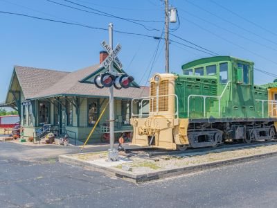
Jeff P from Berkeley, CA, USA, CC BY 2.0, via Wikimedia Commons; Image Size Adjusted
.jpg){kind=link}
Galena Mining & Historical Museum
Galena
Small, fenced-in private park and the surrounding neighborhood that is referred to also as Gramercy, in Manhattan
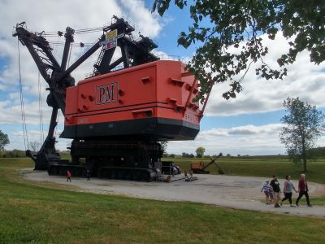
Matias Garabedian from Montreal, Canada, CC BY-SA 2.0, via Wikimedia Commons; Image Size Adjusted
.jpg){kind=link}
Route 66 Cruisers
Galena
1.45-mile-long (2.33 km) elevated linear park, greenway and rail trail created on a former New York Central Railroad spur on the west side of Manhattan
Epicgenius, CC BY-SA 4.0, via Wikimedia Commons; Image Size Adjusted

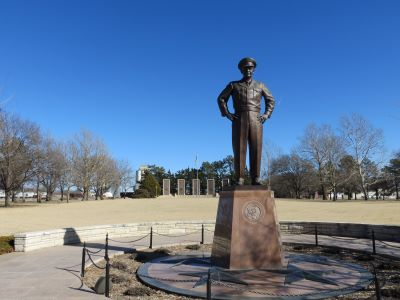
Jim.henderson, CC BY 4.0, via Wikimedia Commons; Image Size Adjusted
_jeh.jpg){kind=link}
Nelson's Old Riverton Store
Riverton
Artificial island park in the Hudson River west of Manhattan is supported by 132 pot-shaped structures suspended above the water
Kansas Route 66 Visitors Center
Baxter Springs
Neighborhood in Lower Manhattan in New York City, known for its large Italian population
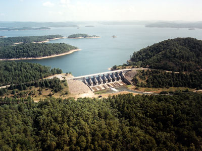
ajay_suresh, CC BY 2.0, via Wikimedia Commons; Image Size Adjusted
.jpg){kind=link}
Robert Whitebird Cultural Center
Quapaw
Museum including two historical tenement buildings were home to an estimated 15,000 people, from over 20 nations, between 1863 and 2011
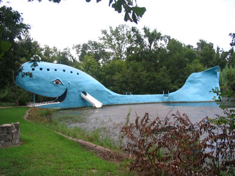
Alan Light, CC BY 2.0, via Wikimedia Commons; Image Size Adjusted
.jpg){kind=link}
Blue Whale of Catoosa
Catoosa
21-story, French Renaissance-inspired château style luxury hotel and condominium apartment building in Midtown Manhattan at the southeastern corner of Central Park
Will Rogers Memorial Museum
Claremore
Neighborhood in Lower Manhattan known for its location of many artists' lofts and art galleries, and its variety of shops ranging from trendy upscale boutiques to national and international chain store outlets
Ed Galloway's Totem Pole Park
Foyil
16-story, 150-foot-tall structure of connected staircases between the buildings of Hudson Yards, located in the 5-acre Hudson Yards Public Square
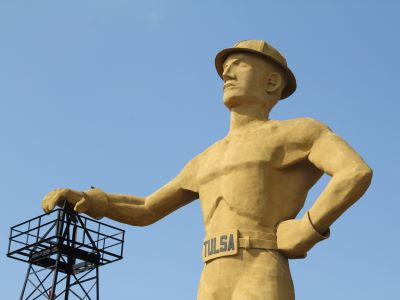
Jean-Christophe BENOIST, CC BY 3.0, via Wikimedia Commons; Image Size Adjusted

Golden Driller
Tulsa
9.75-acre public park in Lower Manhattan is the best known of New York City's public parks and an icon as well as a meeting place and center for cultural activity

Jeff P from Berkeley, CA, USA, CC BY 2.0, via Wikimedia Commons; Image Size Adjusted
Buck Atom's Cosmic Curios on 66
Tulsa
Memorial and museum in New York City commemorating the September 11, 2001 attacks
Blue Dome
Tulsa
25-acre public park located at the southern tip of Manhattan Island facing New York Harbor containing multiple monuments
Cyrus Avery Centennial Plaza
Tulsa
Bronze sculpture depicting a bull, the symbol of aggressive financial optimism and prosperity
Acadia Round Barn
Arcadia
Island in New York Harbor that was the busiest immigrant inspection station in the United States and is now a national museum of immigration
POPS 66
Arcadia
Historic building in the Financial District where the colonial Stamp Act Congress met to draft its message to King George III claiming entitlement to the same rights as the residents of Britain and other historcial events

Jim.henderson, Public domain, via Wikimedia Commons; Image Size Adjusted

Milk Bottle Grocery
Oklahoma City
Museum and restaurant in the Financial District of Lower Manhattan that played a prominent role in history before, during, and after the American Revolution
Momos, CC BY-SA 3.0, via Wikimedia Commons; Image Size Adjusted

Route 66 Interpretive Center
Chandler
Located at the center of City Hall Park in the Civic Center area of Lower Manhattan, the building is the oldest city hall in the United States that still houses its original governmental functions
Gh9449, CC BY-SA 4.0, via Wikimedia Commons; Image Size Adjusted

Rock Café
Stroud
Rapid transit system owned by the City of New York and opened on October 27, 1904, is one of the world's oldest public transit systems
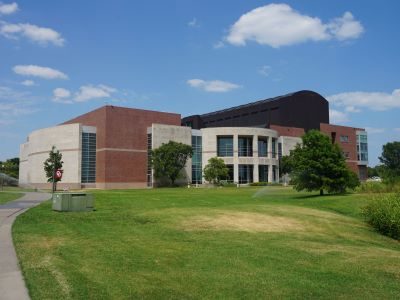
Andy C, CC BY-SA 3.0, via Wikimedia Commons; Image Size Adjusted

Seaba Station Motorcycle Museum
Warwick
The world's largest stock exchange and is the leading US money center for international financial activities
Armando Olivo Martín del Campo, CC BY-SA 4.0, via Wikimedia Commons; Image Size Adjusted

National Route 66 Museum and Transportation Museum
Elk City
Main building of the rebuilt World Trade Center complex in Lower Manhattan, is the tallest building in the United States and in the Western Hemisphere
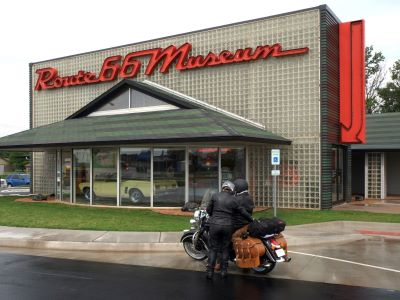
Tdorante10, CC BY-SA 4.0, via Wikimedia Commons; Image Size Adjusted
_22_-_Staten_Island_Ferry.jpg){kind=link}
Oklahoma Route 66 Museum
Clinton
Busy ferry service operating 24-hours a day connecting Manhattan with Staten Island with view of Statue of Liberty, Ellis Island and New York Skyline
Lucille's Service Station
Hydro
Colossal neoclassical sculpture on Liberty Island in New York Harbor within New York City
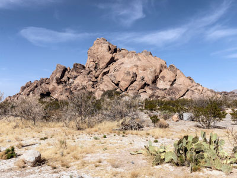
Jean-Christophe BENOIST, CC BY 3.0, via Wikimedia Commons; Image Size Adjusted

Magnolia Gas Station
Shamrock
Historic Episcopal church & cemetery where Alexander Hamilton & other early Americans are buried
U-Drop Inn Café
Shamrock
Designed by the Spanish architect Santiago Calatrava, station consisting of white ribs that interlock high above the ground and interior containing two underground floors
Restored 1929 Route 66 Gas Station
McLean
Southernmost bridge connecting Manhattan Island and Long Island is a major tourist attraction since its opening and an icon of New York City
Devil's Rope Museum
McLean
85-acre park on the Brooklyn side of the East River includes Main Street Parks, historic Fulton Ferry Landing, Piers 1-6, Empire Stores and the Tobacco Warehouse
MusikAnimal, CC BY-SA 4.0, via Wikimedia Commons; Image Size Adjusted
.jpg){kind=link}
Leaning Tower of Texas
Groom
Peninsular neighborhood and entertainment area in the southwestern section of Brooklyn
Cadillac Ranch
Amarillo
Short for Down Under the Manhattan Bridge Overpass, a neighborhood of Brooklyn remade into an upscale residential and commercial community for art galleries, and currently a center for technology startups
Ajay Suresh from New York, NY, USA, CC BY 2.0, via Wikimedia Commons; Image Size Adjusted
.jpg){kind=link}
Big Texan Steak Ranch & Brewery
Amarillo
Chain of fast food restaurants specializing in hot dogs. The original Nathan's restaurant stands at the corner of Surf and Stillwell Avenues in the Coney Island neighborhood of the Brooklyn
The All-Nite Images from NY, NY, USA, CC BY-SA 2.0, via Wikimedia Commons; Image Size Adjusted
.jpg){kind=link}
Bug Ranch
Conway
Museum displaying historical artifacts of the New York City Subway, bus, and commuter rail systems in the greater New York City metropolitan region
King of Hearts, CC BY-SA 4.0, via Wikimedia Commons; Image Size Adjusted

MidPoint Café
Adrian
Urban park in Brooklyn including 90-acre (36 ha) Long Meadow, the Picnic House, Litchfield Villa, Prospect Park Zoo, the Boathouse, and Concert Grove
Postdlf, CC BY-SA 3.0, via Wikimedia Commons; Image Size Adjusted

Glenrio
Glenrio
One of the largest zoos in the United States by area and is the largest metropolitan zoo in the United States by area
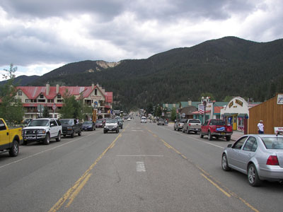
Joyofmuseums, CC BY-SA 4.0, via Wikimedia Commons; Image Size Adjusted

Tee Pee Curios
Tucumcari
Museum in Upper Manhattan, specializing in European medieval art and architecture, with a focus on the Romanesque and Gothic periods

Eden, Janine and Jim, CC BY 2.0, via Wikimedia Commons; Image Size Adjusted

Blue Swallow Motel
Tucumcari
Public park in the northern part of Queens is the fourth-largest public park in New York City
Eden, Janine and Jim, CC BY 2.0, via Wikimedia Commons; Image Size Adjusted
Route 66 Auto Museum
Santa Rosa
Public park in the northern part of Queens is the fourth-largest public park in New York City
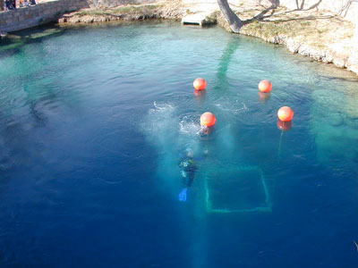
PortableNYCTours, CC BY-SA 4.0, via Wikimedia Commons; Image Size Adjusted
Blue Hole
Santa Rosa
Cathedral in the Morningside Heights neighborhood of Manhattan is the world's sixth-largest church by area

Anthony Quintano from Hillsborough, NJ, United States, CC BY 2.0, via Wikimedia Commons; Image Size Adjusted
KiMo Theatre
Albuquerque
Most visited urban park in the United States, with an estimated 42 million visitors annually as of 2016, and is the most filmed location in the world
bryan..., CC BY-SA 2.0, via Wikimedia Commons; Image Size Adjusted
Route 66 Diner
Albuquerque
Museum complex comprises 26 interconnected buildings housing 45 permanent exhibition halls, in addition to a planetarium and a library

Rhododendrites, CC BY-SA 4.0, via Wikimedia Commons; Image Size Adjusted
66 Diner
Albuquerque
16.3-acre complex of buildings houses nationally and internationally renowned performing arts organizations including the New York Philharmonic, the Metropolitan Opera, and the New York City Ballet
Madonna of the Trail
Albuquerque
Largest art museum in the United States. Its permanent collection contains over 2 million works, divided among 17 curatorial departments
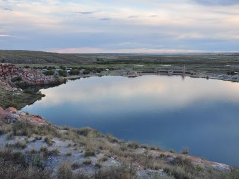
Jdforrester, CC BY 4.0, via Wikimedia Commons; Image Size Adjusted
Bowlin's Continental Divide Trading Post
Continental Divide
Aerial tramway in New York City that spans the East River and connects Roosevelt Island to the Upper East Side of Manhattan
Jean-Christophe BENOIST, CC BY 3.0, via Wikimedia Commons; Image Size Adjusted
El Rancho Hotel and Motel
Gallup
Art museum that is home of a continuously expanding collection of Impressionist, Post-Impressionist, early Modern, and contemporary art

Ajay Suresh from New York, NY, USA, CC BY 2.0, via Wikimedia Commons; Image Size Adjusted
Petrified Forest National Park
Holbrook
Theatrical performances which are presented in the 41 professional theatres, located in the Theater District and the Lincoln Center along Broadway
-400.jpg)
ajay_suresh, CC BY 2.0, via Wikimedia Commons; Image Size Adjusted
Wigwam Motel
Holbrook
9.6-acre (39,000 m2) public park in Midtown Manhattan where the eastern half is occupied by the Main Branch of the New York Public Library and the western half contains a lawn, and shaded walkways
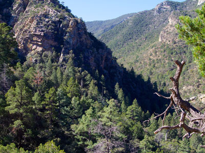
Misterweiss at English Wikipedia, Public domain, via Wikimedia Commons; Image Size Adjusted
Rainbow Rock Shop
Holbrook
Art Deco skyscraper in the Turtle Bay neighborhood on the East Side of Manhattan is the tallest brick building in the world with a steel framework
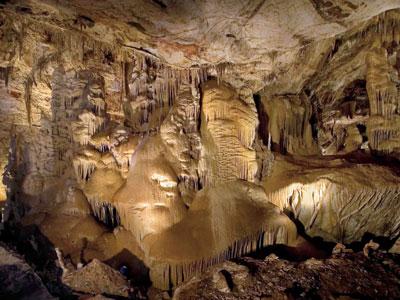
Hypnotoad78, CC BY-SA 4.0, via Wikimedia Commons; Image Size Adjusted
Jack Rabbit Trading Post
Joseph City
Outdoor terrace jutting 80 feet outward south, providing panoramic views of Manhattan and the Hudson River

Meteor Crater Natural Landmark
Winslow
Commuter rail terminal in Midtown Manhattan known for its distinctive architecture and interior design that have earned it several landmark designations
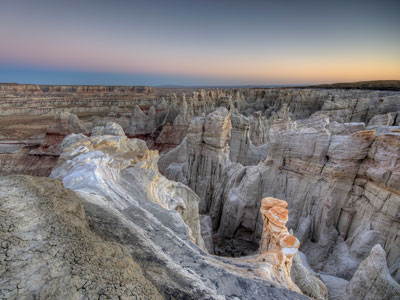
ajay_suresh, CC BY 2.0, via Wikimedia Commons; Image Size Adjusted
Homolovi State Park
Winslow
Art museum located in Midtown Manhattan is often identified as one of the largest and most influential museums of modern art in the world

Ingfbruno, CC BY-SA 3.0, via Wikimedia Commons; Image Size Adjusted
Galaxy Diner
Flagstaff
Flagship building in the New York Public Library system and a landmark in Midtown Manhattan
PumpkinSky, CC BY-SA 3.0, via Wikimedia Commons; Image Size Adjusted
Hotel Monte Vista
Flagstaff
Art Deco styled entertainment venue within Rockefeller Center known for its large auditorium
Delgadillo's Snow Cap
Seligman
Large complex consisting of 19 commercial buildings covering 22 acres (89,000 m2) between 48th Street and 51st Street in Midtown Manhattan
Jean-Christophe BENOIST, CC BY 3.0, via Wikimedia Commons; Image Size Adjusted
Pete's Route 66 Gas Station Museum
Williams
Catholic cathedral in the Midtown Manhattan is the largest Gothic Revival Catholic cathedral in North America
Saggittarius A, CC BY-SA 4.0, via Wikimedia Commons; Image Size Adjusted
Hackberry General Store
Hackberry
Observation deck consisting of glass-floored elevators and enclosed glass balconies that protrude from the facade
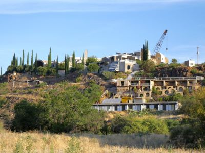
NBCUniversal, CC BY 3.0, via Wikimedia Commons; Image Size Adjusted
Antares Point Visitor Center and Gift Shop
Antares
Centerpiece of Rockefeller Center houses the headquarters and New York studios of television network NBC; the Rainbow Room restaurant; and Top of the Rock observation deck
Route 66 Museum and Gift Shop
Kingman
Major commercial intersection, tourist destination, entertainment center, brightly lit by numerous billboards and advertisements, is one of the world's busiest pedestrian areas, and the hub of the Broadway Theater District
Basil D Soufi, CC BY-SA 3.0, via Wikimedia Commons; Image Size Adjusted
Addicted to Route 66
Kingman
Complex that has served as the official headquarters of the United Nations since 1951 and holds the seats of the principal organs of the UN
MusikAnimal, CC BY-SA 4.0, via Wikimedia Commons; Image Size Adjusted
Arizona Route 66 Museum
Kingman
Food hall, shopping mall, office building and television production facility located in the Chelsea neighborhood of Manhattan
Twin Arrows Trading Post
Twin Arrows
Neighborhood in Lower Manhattan is the home to the highest concentration of Chinese people in the Western Hemisphere and is one of the oldest Chinese ethnic enclaves

Sam valadi, CC BY 2.0, via Wikimedia Commons; Image Size Adjusted

PortableNYCTours, CC BY-SA 4.0, via Wikimedia Commons; Image Size Adjusted
66 Motel
Needles
Triangular 22-story, 285-foot-tall (86.9 m) steel-framed landmarked building located in the eponymous Flatiron District neighborhood of Manhattan
Roy's Motel & Café
Amboy
Neighborhood on the west side of Lower Manhattan known as an artists' haven, bohemian capital, cradle of the modern LGBT movement, and the East Coast birthplace the Beat and '60s counterculture movements
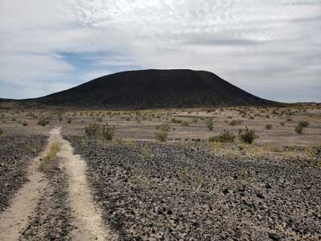
Jeff P from Berkeley, CA, USA, CC BY 2.0, via Wikimedia Commons; Image Size Adjusted
Amboy Crater National Natural Landmark
Amboy
Small, fenced-in private park and the surrounding neighborhood that is referred to also as Gramercy, in Manhattan
Matias Garabedian from Montreal, Canada, CC BY-SA 2.0, via Wikimedia Commons; Image Size Adjusted
Bagdad Café
Newberry Springs
1.45-mile-long (2.33 km) elevated linear park, greenway and rail trail created on a former New York Central Railroad spur on the west side of Manhattan
-400.jpg)
Epicgenius, CC BY-SA 4.0, via Wikimedia Commons; Image Size Adjusted
Jim.henderson, CC BY 4.0, via Wikimedia Commons; Image Size Adjusted
California Route 66 Museum
Victorville
Artificial island park in the Hudson River west of Manhattan is supported by 132 pot-shaped structures suspended above the water
Route 66 Mother Road Museum
Barstow
Neighborhood in Lower Manhattan in New York City, known for its large Italian population
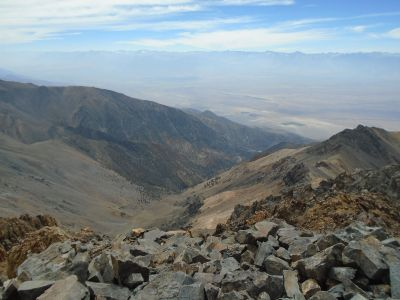
ajay_suresh, CC BY 2.0, via Wikimedia Commons; Image Size Adjusted
Original McDonald's Museum
San Bernardino
Museum including two historical tenement buildings were home to an estimated 15,000 people, from over 20 nations, between 1863 and 2011
Alan Light, CC BY 2.0, via Wikimedia Commons; Image Size Adjusted
Wigwam Motel
San Bernardino
21-story, French Renaissance-inspired château style luxury hotel and condominium apartment building in Midtown Manhattan at the southeastern corner of Central Park
Aztec Hotel
Monrovia
Neighborhood in Lower Manhattan known for its location of many artists' lofts and art galleries, and its variety of shops ranging from trendy upscale boutiques to national and international chain store outlets
Beverly Hills 76
Beverly Hills
16-story, 150-foot-tall structure of connected staircases between the buildings of Hudson Yards, located in the 5-acre Hudson Yards Public Square

Jean-Christophe BENOIST, CC BY 3.0, via Wikimedia Commons; Image Size Adjusted
Santa Monica Pier and Beach
Santa Monica
9.75-acre public park in Lower Manhattan is the best known of New York City's public parks and an icon as well as a meeting place and center for cultural activity
Overview
U.S. Route 66 or U.S. Highway 66 (US 66 or Route 66) was one of the original highways in the United States Numbered Highway System. It was established on November 11, 1926, with road signs erected the following year. The highway ran from Chicago, Illinois, through Missouri, Kansas, Oklahoma, Texas, New Mexico and Arizona before terminating in Santa Monica, California, covering a total of 2,448 miles (3,940 km).
US 66 was a primary route for those who migrated west, especially during the Dust Bowl of the 1930s, and it supported the economies of the communities through which it passed. People doing business along the route became prosperous and they later fought to keep it alive in the face of the growing threat of being bypassed by the more advanced freeways of the Interstate Highway System in the 1960s and 1970s.
US 66 underwent many improvements and realignments over its lifetime, but it was officially removed from the United States Highway System in 1985 after it was entirely replaced by segments of the Interstate Highway System. Portions of the road that passed through Illinois, Missouri, Oklahoma, New Mexico, Arizona and California have been communally designated a National Scenic Byway by the name Historic Route 66, returning the name to some maps.
In John Steinbeck's novel The Grapes of Wrath (1939), the highway symbolizes escape, loss, and the hope of a new beginning; Steinbeck dubbed it the Mother Road. Other designations and nicknames include the Will Rogers Highway and the Main Street of America, the latter nickname shared with U.S. Route 40. It is also featured in the Disney/Pixar animated feature film franchise Cars.
Much of the early highway, like all the other early highways, was gravel or graded dirt. Due to the efforts of the U.S. Highway 66 Association, in 1938 US 66 became the first highway to be completely paved.
In the 1950s, US 66 became the main highway for vacationers heading to Los Angeles. The road passed through the Painted Desert and near the Grand Canyon. Meteor Crater in Arizona was another popular stop. This sharp increase in tourism in turn gave rise to a burgeoning trade in all manner of roadside attractions, including teepee-shaped motels, frozen custard stands, Indian curio shops and reptile farms. Meramec Caverns near St. Louis, began advertising on barns, billing itself as the "Jesse James hideout". The Big Texan advertised a free 72-ounce (2.0 kg) steak dinner to anyone who could consume the entire meal in one hour. It also marked the birth of the fast-food industry: Red's Giant Hamburg in Springfield, Missouri, site of the first drive-through restaurant and the first McDonald's in San Bernardino, California. Changes like these to the landscape further cemented 66's reputation as a near-perfect microcosm of the culture of America, now linked by the automobile.
The beginning of the decline for US 66 came in 1956 with the signing of the Interstate Highway Act by President Dwight D. Eisenhower. During its nearly 60-year existence, US 66 was under constant change. As highway engineering became more sophisticated, engineers constantly sought more direct routes between cities and towns. Increased traffic led to a number of major and minor realignments of US 66 through the years, particularly in the years immediately following World War II when Illinois began widening US 66 to four lanes through virtually the entire state from Chicago to the Mississippi River just east of St. Louis and included bypasses around virtually all of the towns. By the early to mid-1950s, Missouri also upgraded its sections of US 66 to four lanes complete with bypasses. Most of the newer four-lane 66 paving in both states was upgraded to freeway status in later years.
Bobby Troup wrote "(Get Your Kicks on) Route 66", which was popularized by Nat King Cole with the King Cole Trio and later covered by artists ranging from Chuck Berry and Glenn Frey to The Manhattan Transfer, John Mayer and Brian Setzer, as well as the Rolling Stones.
This article uses material from the Wikipedia article "Route 66", which is released under the Creative Commons Attribution-Share-Alike License 3.0